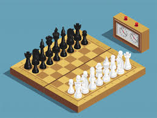
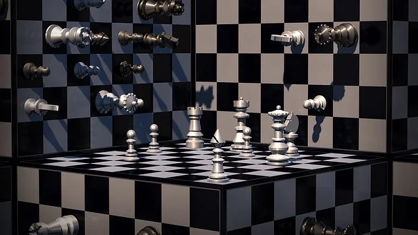
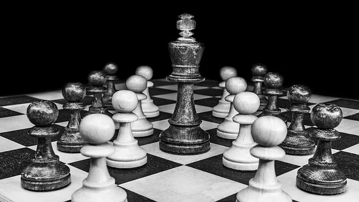
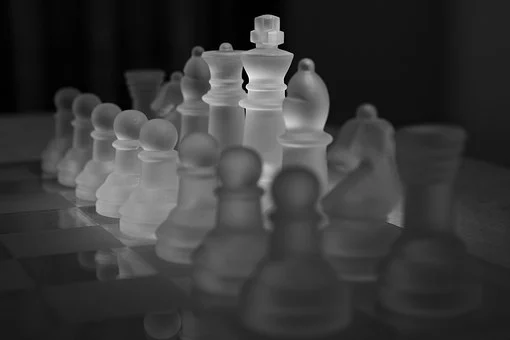
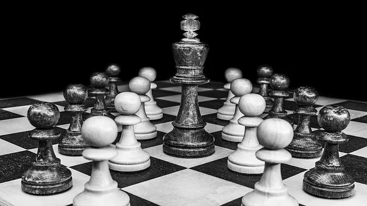
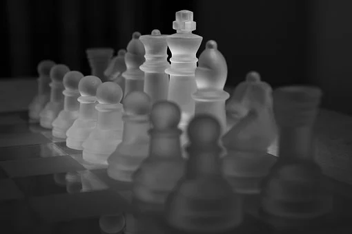
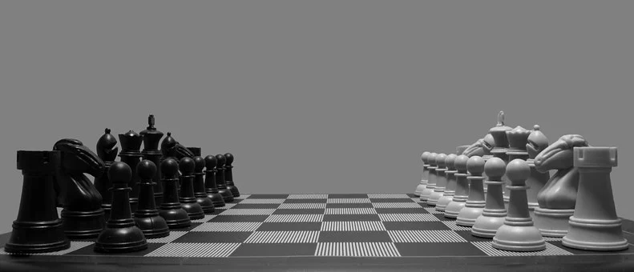
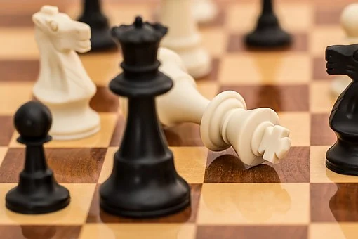
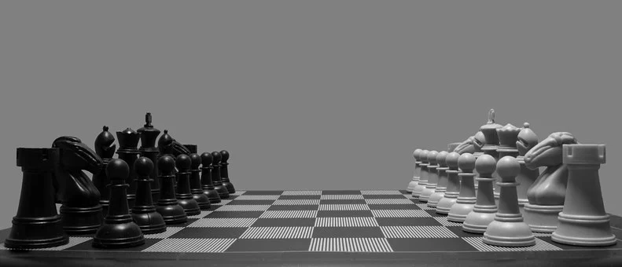
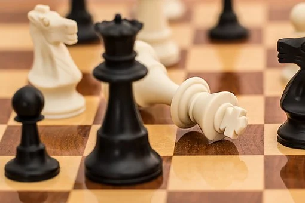

Piękne szachy


 
Zasady gry w szachy – prawidła regulujące sposób rozgrywania partii szachów. Choć pochodzenie gry nie zostało dokładnie wyjaśnione, to współczesne zasady ukształtowały się w średniowieczu. Ewoluowały one do początków XIX wieku, kiedy to osiągnęły właściwie swą bieżącą postać. W zależności od miejsca zasady gry różniły się od siebie, współcześnie za przepisy gry odpowiada Międzynarodowa Federacja Szachowa (Fédération Internationale des Échecs, FIDE). Przepisy te mogą się różnić w przypadku różnych wariantów gry, np. dla szachów szybkich, błyskawicznych czy korespondencyjnych.
Szachy to gra, w której udział biorą dwie osoby. Rozgrywa się ją na planszy nazywanej szachownicą, gdzie rozstawia się 32 bierki (sześciu rodzajów, w tym po 8 pionów i 8 figur, łącznie 16 dla każdego z graczy). Celem gry jest danie mata, tzn. zagrożenie królowi przeciwnika usunięciem z dalszej rozgrywki („zbiciem”), którego nie sposób uniknąć. Gry jednak rzadko kończą się matem – gracze często poddają się, jeśli uważają, że dalsza gra doprowadzi do ich ostatecznej porażki. Zasady przewidują kilka sposobów remisowego zakończenia gry.
Oprócz podstawowych zasad poruszania bierek zasady regulują także wykorzystywane wyposażenie, kontrolę czasu, zachowanie i etykę graczy, ułatwienia dla niepełnosprawnych graczy, zapis posunięć za pomocą notacji szachowej, jak również sposoby postępowania w przypadku nieprawidłowości napotkanych w czasie gry.


Zasady gry w szachy – prawidła regulujące sposób rozgrywania partii szachów. Choć pochodzenie gry nie zostało dokładnie wyjaśnione, to współczesne zasady ukształtowały się w średniowieczu. Ewoluowały one do początków XIX wieku, kiedy to osiągnęły właściwie swą bieżącą postać. W zależności od miejsca zasady gry różniły się od siebie, współcześnie za przepisy gry odpowiada Międzynarodowa Federacja Szachowa (Fédération Internationale des Échecs, FIDE). Przepisy te mogą się różnić w przypadku różnych wariantów gry, np. dla szachów szybkich, błyskawicznych czy korespondencyjnych.
Szachy to gra, w której udział biorą dwie osoby. Rozgrywa się ją na planszy nazywanej szachownicą, gdzie rozstawia się 32 bierki (sześciu rodzajów, w tym po 8 pionów i 8 figur, łącznie 16 dla każdego z graczy). Celem gry jest danie mata, tzn. zagrożenie królowi przeciwnika usunięciem z dalszej rozgrywki („zbiciem”), którego nie sposób uniknąć. Gry jednak rzadko kończą się matem – gracze często poddają się, jeśli uważają, że dalsza gra doprowadzi do ich ostatecznej porażki. Zasady przewidują kilka sposobów remisowego zakończenia gry.
Oprócz podstawowych zasad poruszania bierek zasady regulują także wykorzystywane wyposażenie, kontrolę czasu, zachowanie i etykę graczy, ułatwienia dla niepełnosprawnych graczy, zapis posunięć za pomocą notacji szachowej, jak również sposoby postępowania w przypadku nieprawidłowości napotkanych w czasie gry.

 


